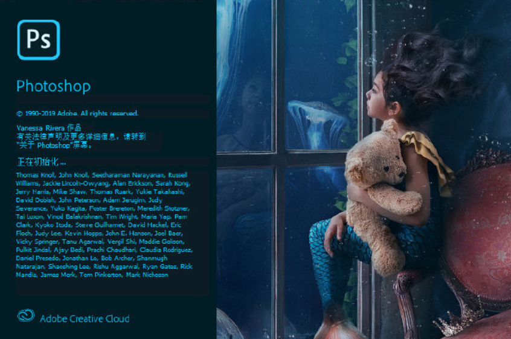
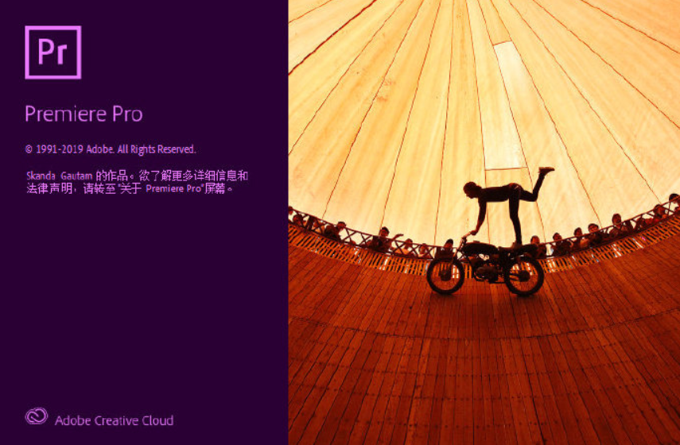

媒体软件

Adobe Photoshop 2020 v21.2.4.323 直装版
Photoshop，简称”PS”，是一款常用和功能强大的图像处理软件。主要处理以像素所构成的数字图像。使用其众多的编修与绘图工具，可以有效地进行图片编辑工作。PS有很多功能，在图像、图形、文字、视频、出版等各方面都有涉及。

Adobe Premiere Pro 2020 v14.3.2 直装版
Photoshop，简称”PS”，是一款常用和功能强大的图像处理软件。主要处理以像素所构成的数字图像。使用其众多的编修与绘图工具，可以有效地进行图片编辑工作。PS有很多功能，在图像、图形、文字、视频、出版等各方面都有涉及。